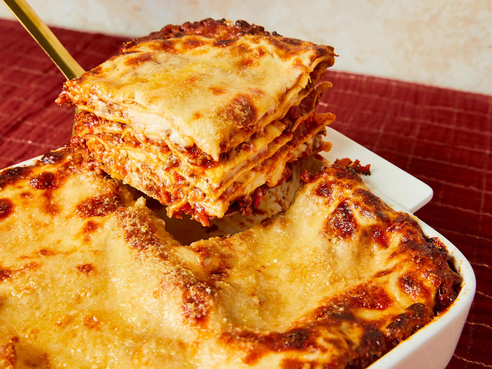

Home
Italian lasagna

Description
Lasagna is a classic Italian dish that is a favorite among many. This hearty casserole is made with layers of
lasagna noodles, meat sauce, cheese, and seasonings. Baked until bubbly and golden, lasagna is a comforting meal
that is perfect for family dinners, potlucks, and special occasions.
Ingridients
- 1 pound (450g) ground beef
- 1 onion, chopped
- 2 cloves garlic, minced
- 1 (28-ounce) can crushed tomatoes
- 1 (6-ounce) can tomato paste
- 1 (15-ounce) can tomato sauce
- 1/2 cup water
- 2 tablespoons sugar
- 1 1/2 teaspoons dried basil leaves
- 1/2 teaspoon salt
- 1/4 teaspoon pepper
- 1/4 cup chopped fresh parsley
- 12 ounces (350g) lasagna noodles
- 16 ounces (450g) ricotta cheese
- 1 egg
- 3/4 teaspoon salt
- 3/4 pound (340g) mozzarella cheese, sliced
- 3/4 cup grated Parmesan cheese
Steps
- Cook the Meat Sauce: In a large skillet, cook and stir the ground beef, onion, and garlic over medium heat
until the meat is no longer pink. Drain off any excess fat. Add the crushed tomatoes, tomato paste, tomato
sauce, water, sugar, basil, salt, pepper, and parsley. Simmer, covered, for about 1 1/2 hours, stirring
occasionally.
- Cook the Noodles: Bring a large pot of lightly salted water to a boil. Cook the lasagna noodles in boiling
water for 8 to 10 minutes. Drain the noodles, and rinse with cold water. Lay the noodles flat on towels, and
blot dry.
- Prepare the Cheese Mixture: In a mixing bowl, combine the ricotta cheese with the egg, and remaining salt.
- Assemble the Lasagna: Preheat the oven to 375°F (190°C). To assemble, spread 1 1/2 cups of meat sauce in the
bottom of a 9x13-inch baking dish. Arrange 6 noodles lengthwise over the meat sauce. Spread with one-half of
the ricotta cheese mixture. Top with a third of mozzarella cheese slices. Spoon 1 1/2 cups meat sauce over
mozzarella, and sprinkle with 1/4 cup Parmesan cheese. Repeat layers, and top with remaining mozzarella and
Parmesan cheese. Cover with foil: to prevent sticking, either spray foil with cooking spray, or make sure the
foil does not touch the cheese.
- Bake: Bake in preheated oven for 25 minutes. Remove foil, and bake an additional 25 minutes. Cool for 15
minutes before serving.